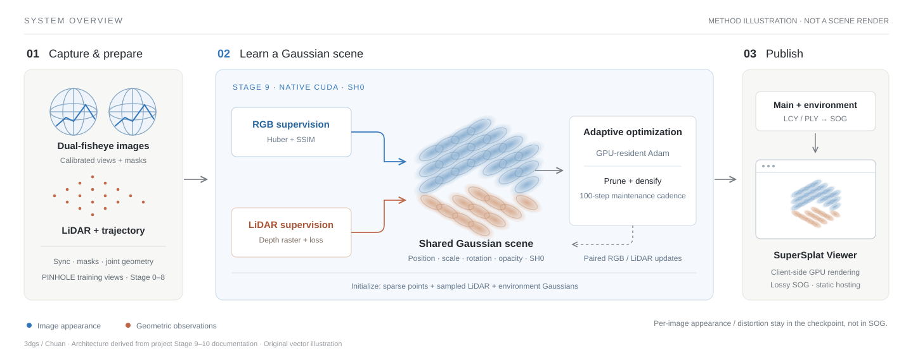

Chuan project / LiDAR-guided 3D Gaussian Splatting
From panoramic capture
to Gaussian scenes.
Learn appearance from images, constrain geometry with LiDAR,
and bring the resulting 3D scene into the browser.

The central ideaA common 3D representation connects two kinds of observations: what cameras see and where surfaces are measured.
Chuan connects calibrated dual-fisheye capture and LiDAR geometry to an offline 3D Gaussian Splatting pipeline. Upstream processing prepares the views and poses; the core stage optimizes a Gaussian scene using both RGB and LiDAR updates. The resulting model is then packaged for a standard browser viewer. [1] [2]
01 / Representation
A scene is more than a point cloud.
Each Gaussian carries a 3D position, scale, rotation, opacity, and color. Together, these overlapping primitives form the scene used by the renderer. The current native training profile uses SH0: the zero-order color component, rather than higher-order view-dependent spherical harmonics. [1]
Small primitives.
A continuous visual field.
Change the footprint and transparency to inspect how neighboring splats overlap.
These controls demonstrate representation only. They do not run the project's trainer or renderer.
02 / Gaussian training
Two supervision paths.
One Gaussian scene.
The native CUDA backend executes paired LiDAR and RGB updates. RGB fitting uses Huber and SSIM terms with depth/opacity regularization; the LiDAR branch rasterizes depth and evaluates its own loss. Gaussian parameters and Adam state remain GPU-resident. [1]
Depth / opacity regularization
Final pruning before export
Depth loss
Upstream, in briefWhat happens before Gaussian training?
Stages 0–4 handle decoding, dynamic-point filtering, synchronization, image/pose pairing, and person masks. Stages 5–7 perform feature matching, triangulation, and joint visual–LiDAR geometry optimization.
Stage 8 projects each fisheye image into three 1024 × 1024, 90° PINHOLE views. These training views differ from Stage 5's five-view feature-extraction projections. Stage 9 then consumes the prepared views alongside the filtered LiDAR map and trajectory. [4]
03 / Recorded evidence
One complete run.
Clearly bounded evidence.
The 133957 run completed Stages 0–10 from raw inputs, starting on October 2 and finishing on October 3, 2026. The numbers below belong to that run, not to the trainer's separate default Test3 configuration. [3]
PSNR on the same training views
The toned branch applies learned per-image appearance.
| Output | PSNR ↑ | SSIM ↑ |
|---|---|---|
| Raw RGB | 19.8594 | 0.777927 |
| Toned RGB | 25.3347 | 0.809903 |
7,770 views · frozen checkpoint
Recorded training time: approximately 1,489 s.
Evaluation protocol and exact counts
PSNR uses valid, unmasked, unclipped float RGB with data range 1. SSIM uses the native 11 × 11 CUDA kernel and only fully valid windows. Metrics are averaged equally across views. The SOG export contains exactly 10,294,046 Gaussians, with no additional point removal during publishing. [3]
04 / Browser delivery
A portable scene.
Not the entire training state.
Stage 10 combines the main and environment Gaussians, converts the model to the official SOG format, and emits a self-hostable SuperSplat Viewer. In this project, LCY is standard little-endian PLY encoding. SOG quantizes the Gaussian attributes; the browser uses the exported scene without per-image checkpoint corrections. [2]
SH0 Gaussian parameters
Retained Gaussian count
Static web delivery
Per-image appearance · per-image distortion · full optimizer state
Public scene asset not attached
The recorded run passed a hardware-GPU browser capture check. Its Stage 10 publishing files were later cleaned, so an online reconstruction is not attached here. A freshly exported scene is needed to attach the real viewer. [3]
Coordinate and checkpoint boundaries
The documented SOG publishing transform is (x, y, z) → (−x, z, y), with the initial camera transformed consistently. SOG does not include the checkpoint's appearance or distortion fields. The native checkpoint does not contain the full Gaussian Adam state and scheduler, so it is not an exact-resume training checkpoint. [1] [2]
05 / Implementation & sources
Follow the implementation.
The system integrates data preparation, reconstruction, training, and publication. The native training backend reuses the pinned 3dgs_CUDA Linux revision; project-specific interfaces and experiments are recorded separately. The backend provenance identifies the reused components and the project-specific changes. [5]

The project repository and implementation-document links may require access. This project page is public.
- Stage 9 — Native CUDA SH0 training ↗Initialization, supervision, maintenance, image corrections, evaluation, and limitations.
- Stage 10 — SOG & SuperSplat delivery ↗Model encoding, coordinate conversion, browser checks, and publishing boundaries.
- 133957 — Full-pipeline completion record ↗Source of every run count, size, runtime, and score on this page.
- Project overview & stage contracts ↗Sensor preparation and visual–LiDAR geometry before Gaussian training.
- Native backend provenance ↗Upstream revision 39578a0; reused components and project modifications.
Publication components: splat-transform and SuperSplat Viewer. Editorial inspiration: Mem2Gen. Original page code and vector illustrations.